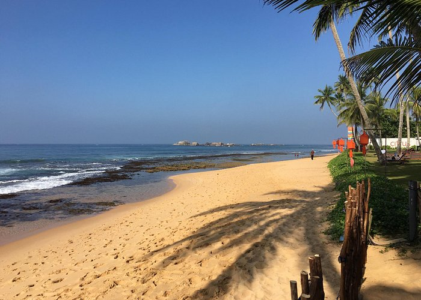

Turtle Hatcheries
Most Popular Turtle Hatcheries in Sri Lanka
Sri Lanka Turtle Conservation
Turtle conservation in Sri Lanka is of paramount importance due to the island's rich biodiversity and the presence of several sea turtle species in its coastal areas. Sri Lanka is home to five species of sea turtles: Green Turtles, Loggerhead Turtles, Olive Ridley Turtles, Hawksbill Turtles, and Leatherback Turtles. Efforts are made by various organizations, government bodies, and local communities to protect these turtles and their habitats.
.jpg)
Bentota Turtle Hatchery
Learn More

Hikkaduwa Turtle Hatchery
Learn More
Kosgoda Turtle Hatchery
Learn MoreAbout Turtle Hatcheries in Sri Lanka
The Wildlife and wildlife Protection Society of Sri Lanka, a non-governmental organization for the preservation of wildlife, created the country's first sea turtle hatchery in Yala National Park in 1956. In 1969, a second hatchery was created in Palatupana. The importance of turtle hatcheries to the preservation of sea turtles, however, has been hotly contested. The Department of Wildlife Conservation (DWC) of Sri Lanka believed that the majority of hatcheries' management practices were not favorable to the preservation of sea turtles.
Five out of seven marine turtle species in world around Sri Lanka
- Green Turtle
- Hawksbill Turtle
- Loggerhead Turtle
- Olive Ridley Turtle
- Leatherback Turtle
Freshwater Turtles in Sri Lanka
- Spotted Black Turtle
- Parker's Black Turtle
- Red-Earned Slider
- flapshell Turtle